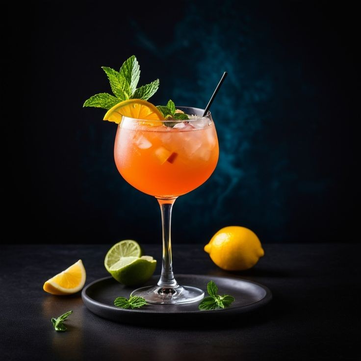

El Festín de las Flores
Nuestra Carta de Temporada
Carpaccio de Remolacha y Rosas
$26.000Láminas finas de remolacha marinadas en balsámico de rosas, queso de cabra artesanal y nueces crocantes garrapiñadas.
Camarones en Orquídea
$38.000Camarones premium apanados en coco crujiente, servidos sobre una delicada cama de emulsión de mango y pétalos cítricos.
Tartaleta de Cebollas Caramelizadas
$22.000Fina masa quebrada rellena de cebollas dulces confitadas al vino tinto de la casa y un toque de tomillo fresco de nuestro huerto.
Lomo al Trapo "Victoria"
$68.000Medallón de res premium cocinado en reducción de frutos del bosque silvestres, acompañado de espárragos frescos envueltos en tocino ahumado.
Pasta Primavera Rococó
$48.000Pappardelle artesanal bañado en una suntuosa crema de queso parmesano, guisantes tiernos, flores de brócoli y esencia pura de trufa blanca.
Pato a la Lavanda
$72.000Pechuga de pato tierna (magret) glaseada con miel orgánica de abejas y flores de lavanda, servido con zanahorias baby glaseadas.
Cebiche de Flores y Corvina
$52.000Cubos de corvina fresca curados en leche de tigre infusionada con hibisco (flor de Jamaica) y acompañados de crujientes chips de plátano morado.
Éclair de Pistacho y Azahar
$18.000Clásica masa choux francesa rellena de una tersa crema diplomata de pistachos tostados, decorada con hilos finos de chocolate blanco.
Crème Brûlée de Jazmín
$24.000Crema sedosa de vainilla de Papantla infusionada con sutiles flores de jazmín y coronada con una capa crujiente de azúcar sopleteada.
Tarta de Pera y Almendras
$21.000Pera madura pochada con esmero en un almíbar perfumado de anís estrellado, horneada sobre una base crujiente de crema frangipane de almendras.
Gin Tonic del Huerto
$42.000Ginebra botánica premium mezclada con tónica artesanal, bayas aromáticas de enebro, pétalos de rosa fresca y una rodaja refrescante de pepino.
Chocolate Amargo con Violetas
$14.000Auténtico chocolate de origen santandereano al 70% infusionado con esencia natural de violetas francesas y decorado con nubes de mini malvaviscos.
Sangría Blanca Floral
$38.000Elegante copa de vino blanco afrutado combinado con lychees exóticos, fresas frescas de la sabana y una selección de flores comestibles de temporada.
